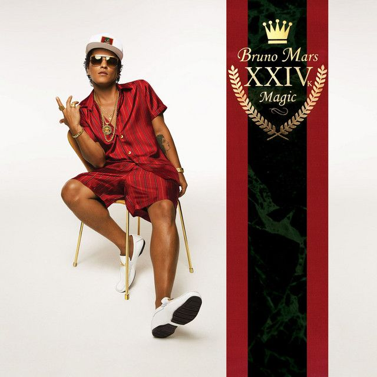

The Magic of Music and Style
Who is Bruno Mars?
Bruno Mars, yang memiliki nama asli Peter Gene Hernandez, lahir pada 8 Oktober 1985 di Honolulu, Hawaii. Ia berasal dari keluarga musisi — ayahnya pemain perkusi dan ibunya seorang penyanyi. Sejak kecil, Bruno sudah terbiasa tampil di atas panggung dan dikenal sebagai “Little Elvis” karena kemampuan menirukan gaya Elvis Presley.
Setelah lulus sekolah, Bruno pindah ke Los Angeles untuk mengejar karier musik. Meski awalnya sulit, ia mulai dikenal setelah menulis lagu untuk artis lain dan akhirnya merilis album debut Doo-Wops & Hooligans pada tahun 2010 dengan hits besar seperti “Just the Way You Are” dan “Grenade.”
Kesuksesannya berlanjut melalui album Unorthodox Jukebox dan 24K Magic dengan lagu-lagu populer seperti “Locked Out of Heaven”, “Treasure”, dan “That’s What I Like.” Dengan suara khas dan penampilan panggung yang energik, Bruno Mars menjadi salah satu artis paling berpengaruh di dunia.
Hingga kini, Bruno terus berkarya dan menginspirasi banyak orang lewat musiknya yang penuh semangat, membuktikan bahwa kerja keras dan bakat dapat membawa seseorang meraih impian.
